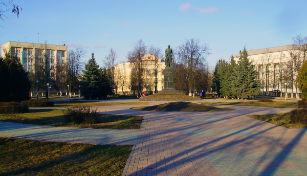
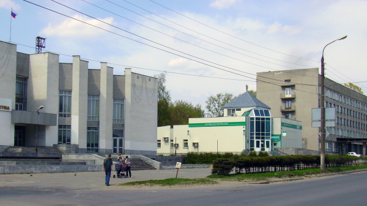
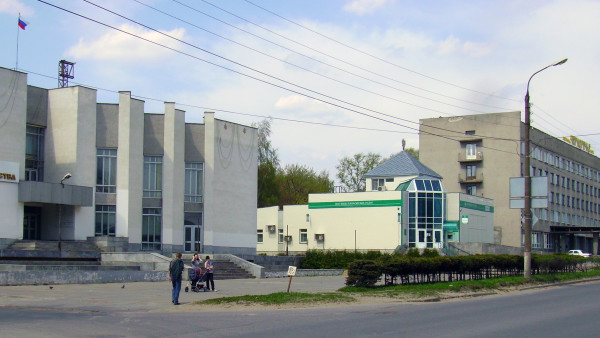
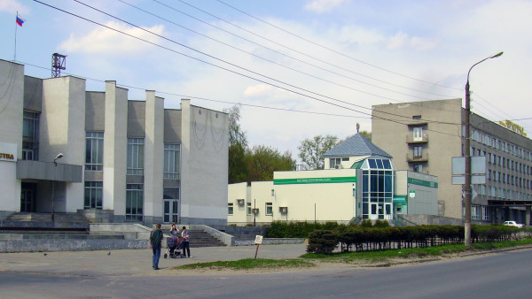
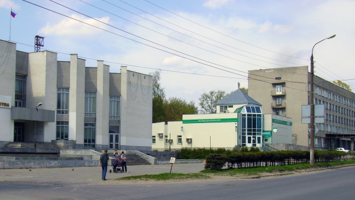
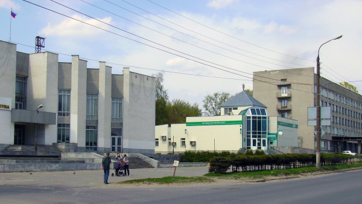

Дзержинск - Рай на Земле

Есть мечты - го сюда, они сбываются здесь

Красота то какая (gif)
Еще маленько красоты (muted video as a gif)
А звук???(audio)
Еще видосик(video with sources)
Известные дзержинцы
#
Человек
Чем прославился
1
ЧИЖ
Музыкант
2
Натали
Поп-певица
 


